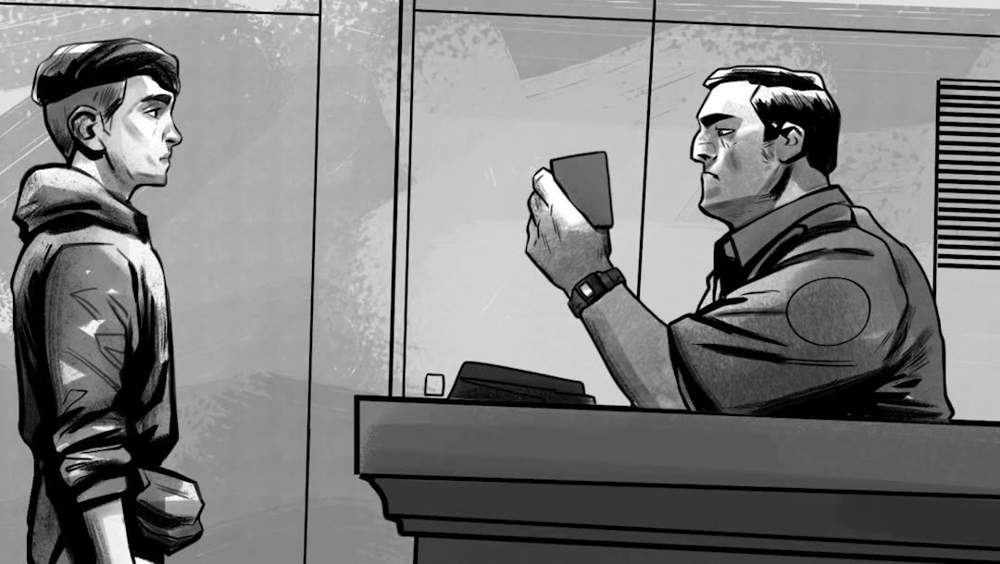

Part 2
We All Breathe
We All Breathe
The Same Air
The new interactive graphic novel by Sam Yazdanpanna. What came after. How I became illegal.
Part 1
Iran → Europe
Like
Like
Dust
The journey. Black and white.
EnterAt seventeen, Sam had to leave Iran. Like Dust is the journey to Europe. We All Breathe The Same Air, his new graphic novel, is what came after.
Part 2
New · interactive graphic novel
We All Breathe The Same Air

A smuggler named Yilmaz, a fake passport, a plane to the Netherlands. Interrogations, a refugee camp, a wait that never seemed to end. Love, a little bird, and a letter that changed everything.
We all breathe the same air… but not all of us are equally free.
Part 1
Interactive novel
Like Dust

Seventeen-year-old Sam travels from Iran to Europe, hoping to cross every kind of border. An interactive illustrated novel in black and white.


- Script
- Sam Yazdanpanna
- Script consultant
- David Henrichs
- Illustrations
- Maysam Barza
- Motion
- Mostafa Kandaz
- Sound
- Oliver Rekkers
Said Rasouli - Interactive & web
- Maarten van de Glas
Sam Yazdanpanna - Producers
- Metafoor
Bas Broertjes
Sam Yazdanpanna